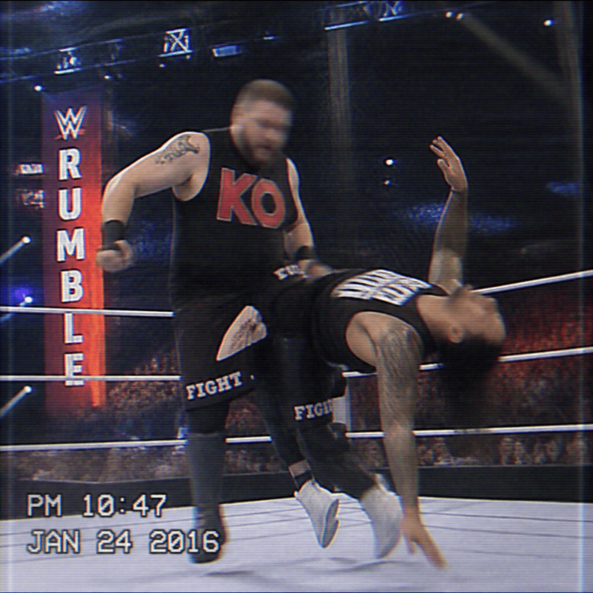

2026/09/21(日)
アベマ・試合結果速報！
○ウルフアロン (12分34秒 スプラッシュマウンテン) KONOSUKE TAKESHITA●
○Rトゥルース (15分10秒 シェイキング・マネー) エリック・ローワン●
○オカダ・カズチカ (20分15秒 レインメーカー) タイラー・ベイト●
○ナタリア (8分45秒 シャープシューター) ミチン●
○小島聡 (13分29秒 はぐれ者の膝蹴り) エルトン・プリンス●
○ケビン・オーエンズ (23分58秒 ストナー) ジェイ・ウーソ●
○ボルチン・オレッグ (17分50秒 サモアンドロップ) アンクル・ハウディー●
○ナタリア (6分38秒 シャープシューター) キャンディス・レラエ●
○リア・リプリー (19分23秒 ラムペイジ) ジュリア●
○ライラ・ヴァルキュリア (10分11秒 フェニックススプラッシュ) パイパー・ニーヴェン●
○アレックス・シェリー (14分32秒 シェルショック) 矢野通●
○ドラゴン・リー (18分44秒 パッケージ・ドライバー) エルトン・プリンス●
○ASUKA (21分05秒 アスカロック) ミチン●
○ローマン・レインズ (25分00秒 スペシャル・パンプハンドル) ジョー・ゲイシー●
○ザ・ミズ (16分30秒 スカル・クリューシャー) モンテス・フォード●
○セス・ロリンズ (22分43秒 ステイ・ドリーム) アポロ・クルーズ●
○エリック・ローワン (12分19秒 ショルダーバスター) JCマテオ●
Thank you for Watching !

「○ケビン・オーエンズ (23分58秒 ストナー) ジェイ・ウーソ● 」